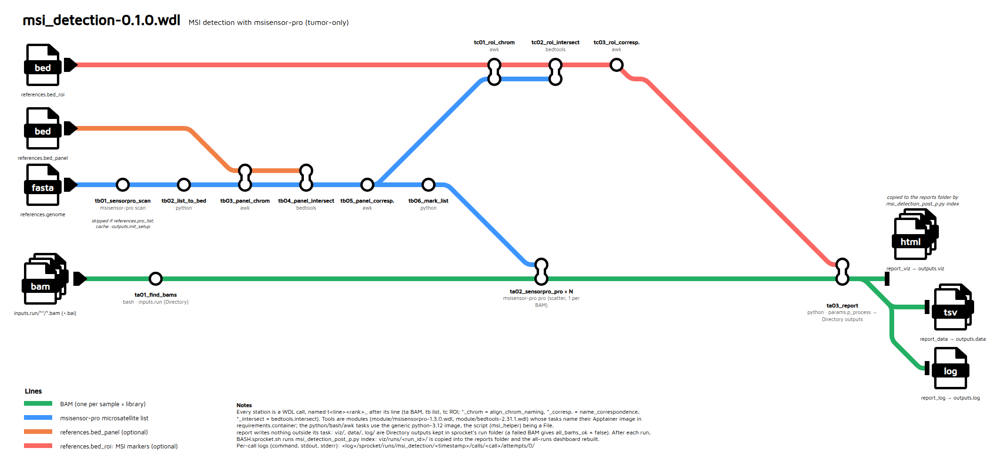

msi_detection-0.1.0.wdl
Everything about the WDL workflow lives in this folder (pipeline-jp/wdl/).
WDL port of run_msisensor2.0.1.py (see its README), run with
sprocket. It runs MSIsensor-pro (tumor-only) on every BAM of a run directory,
restricts the analysis to a sequencing panel and/or the classic MSI markers (BAT26, NR21, ...), and
updates the same HTML reports as the Python pipeline (all runs → one run → one sample).

(Editable diagram: diagram/msi_detection_metromap.drawio; re-export the PNG with diagram/BASH.render_png.sh.)
Contents
Quick start
cd /media/jp/SSD2/CHU/code/pipeline-jp/wdl
./BASH.sprocket.sh # cron mode: pre_process picks the run left to analyse, then runs it
./BASH.sprocket.batch.sh CONFIG_DIR # batch mode: every params JSON of CONFIG_DIR
BASH.sprocket.sh (cron) first runs msi_detection_pre_p.py, which writes the params JSON of
the run finished by ADIVAR and not yet in the MSI locker (moved to $WORK/config/) and adds that run
to the locker. Then both scripts, for each params JSON:
- sets the destinations, hardcoded in the script (not in the params):
VIZ(reports folder) andWORK(sprocket's runs), created if needed; - runs
sprocket run -s -c $SPROCKET_CONFIG(defaultbackends.conf/sprocket.local.toml) in$WORK/sprocket/runs/msi_detection/<timestamp>/, one folder per task; - runs
msi_detection_post_p.py indexas a Slurm job (srun, inpython-3.12.sif): copies the run'sviz/runs/<run_id>/into$VIZ/runs/and rebuilds the dashboard from every$VIZ/runs/*/(index_msi_run.js,index_msi_sample.js; the two.htmlare written once, only rewritten if their template changes).
The workflow itself never writes outside its tasks: the dashboard covers every run, a state that
changes with each run, so it is built after the run (index), not by a task (a task reading the
current reports would not be reproducible nor cacheable). index can be re-run at any time, e.g.
after deleting a run folder. Everything else stays in sprocket's run folder (paths in its
outputs.json), every task keeping its work/ folder (~300 MB per run).
Run by hand:
sprocket run -s -c backends.conf/sprocket.local.toml msi_detection-0.1.0.wdl @params/example_params_1.json
Tasks
In execution order. Tools are wrapped in modules, imported by the workflow:
import "module/msisensorpro-1.3.0.wdl" as msisensorpro # tasks scan, pro
import "module/bedtools-2.31.1.wdl" as bedtools # task intersect
Module tasks are generic (the tool's own options only), declare their image in
requirements.container and can be reused by other workflows; the pipeline-specific steps are
tasks of msi_detection-0.1.0.wdl, in a generic python3 + awk image (helper_container,
apptainer-recipes/python-3.12.sif); the python script is given to them as a File, not built into the image.
Calls are named after their line on the diagram, t<line><rank>_<step>: ta BAMs (green),
tb msisensor-pro list (blue, panel steps included), tc ROI markers (red). A WDL name can't
start with a digit, hence the letter; sprocket's calls/<call>/ folders group the same way.
| Call (task) | Runs | What it does | Main output |
|---|---|---|---|
ta01_find_bams (find_bams) | python image, bash | Lists every *.bam of the run directory (inputs.run) (sub-folders with params.recursive), with its index (.bam.bai or .bai), its library (folder relative to input_dir, . if none) and its sample name (BAM basename). inputs.run is a Directory (mounted by the engine); paths are returned relative to it. Fails if a BAM has no index or no BAM is found. | bams: one row per BAM |
tb01_sensorpro_scan (msisensorpro.scan) | msisensor-pro | msisensor-pro scan of the genome: every microsatellite site. Skipped when references.pro_list is given. Not redone from one run to the next: sprocket's call cache ([run.task] cache = "on") reuses the previous scan (same genome, image and threads), as long as that run's folder is kept. | <genome>.msisensor_pro.list |
tb02_list_to_bed (list_to_bed) | python image | Converts the list to BED6 (start = location − 1, end = start + unit length × repeat times). | <list>.bed |
tb03_panel_chrom (align_chrom_naming) | python image, awk | Only with bed_panel. Copy of the panel BED with its chromosome names (chr1 / 1) aligned on the list's: bedtools matches them literally. | <panel>.chrnorm.bed |
tb04_panel_intersect (bedtools.intersect) | bedtools | bedtools intersect -wa -wb -f 1.0: the sites fully inside a panel region, one row per overlap. | <list>.panel.intersect.tsv |
tb05_panel_correspondence (name_correspondence) | python image, awk | Turns the intersection into a BED6 named <site>#<probe>#<chrom:start-end>. | <list>.panel.bed |
tb06_mark_list (mark_list) | python image | Only with bed_panel. Full list, same rows, filter = PASS for the panel sites, NO elsewhere: the list analysed by msisensor-pro. | <list>.panel.list |
tc01_roi_chrom, tc02_roi_intersect, tc03_roi_correspondence | python image / bedtools / python image | Only with bed_roi. Same three steps with the ROI markers, on the panel sites when there is a panel (genome-wide otherwise). Name ends with #<marker>. | <list>.panel.roi.bed |
ta02_sensorpro_pro × N (msisensorpro.pro) | msisensor-pro | Scatter, one per BAM: msisensor-pro pro -d <analysis list> -t <bam> -b threads -c coverage_threshold. Called with tolerate_failure = true: a failure does not fail the task, status = failed. | <sample>, _all, _dis, _unstable, status |
ta03_report (report) | python image | Gets every BAM's results as Files, copies them to data/<run_id>/<library>/, builds this run's reports in viz/runs/<run_id>/ (run page, sample pages; the all-runs dashboard is built by index after the run) and writes the log; writes nothing outside its task. A failed BAM is reported as failed and gives all_bams_ok = false (the task itself succeeds, so its outputs are kept). | viz/, data/, log/ (Directory), all_bams_ok |
The python steps are subcommands of two scripts:
scripts/msi_detection_main_p.py (list-to-bed, mark-list: the
reference list) and scripts/msi_detection_post_p.py (report, and
index after the run); the report code is the one of run_msisensor2.0.1.py.
Inputs
Keys of the params JSON, all prefixed msi_detection. (see params/example_params_1.json).
inputs, references and params are objects (WDL structs); where results go is not a
params key (see BASH.sprocket.sh):
"msi_detection.inputs": {"run": "..."},
"msi_detection.references": {"genome": "...", "bed_panel": "...", "bed_roi": "...", "pro_list": "..."},
"msi_detection.params": {"threads": 8, "coverage_threshold": 1, "recursive": true, "p_process": {"min_reads": 200, "pval_cutoff": 0.1, "sample_na_fraction": 0.5}},
Optional members can be left out of their object.
| Object / input | Member | Required | Description |
|---|---|---|---|
inputs (InputDirs) | run | yes | Run directory; its name is the run_id |
references (References) | genome | yes | Fasta the BAMs are aligned on |
pro_list | no | Existing scan list: skips the scan | |
bed_panel | no | Plain panel BED (no track line, e.g. *.amplicons.bed) | |
bed_roi | no | MSI markers BED (e.g. ROI.hg19.bed) | |
params (RunParams) | threads | yes | pro -b |
coverage_threshold | yes | pro -c | |
recursive | yes | Also look for BAMs in sub-folders (one per library) | |
p_process.min_reads | yes | Reports: a site counts (% unstable, site status) only with ≥ this many reads (e.g. 200) | |
p_process.pval_cutoff | yes | Reports: a site is unstable when its p-value is above this (e.g. 0.1) | |
p_process.sample_na_fraction | yes | Reports: sample status NA when more than this fraction of its loci are NA or MSU (e.g. 0.5) | |
msisensorpro_container, bedtools_container | no (set in the WDL: apptainer-recipes/*.sif) | Image of each tool (see below) | |
helper_container | no (set in the WDL: apptainer-recipes/python-3.12.sif) | Generic python3 + awk image of the python/bash tasks | |
msi_main_helper | no (set in the WDL: scripts/msi_detection_main_p.py) | Python reference list steps, a File | |
msi_post_helper | no (set in the WDL: scripts/msi_detection_post_p.py) | Python report steps, a File |
The genome, panel and ROI must use the same build as the BAMs (e.g. GRCh37 + ROI.hg19.bed).
Outputs
Returned by ta03_report as Directory outputs, in its work/ folder of the run directory;
index then adds runs/<run_id>/ to $VIZ and builds the dashboard there:
<VIZ>/index_msi_run.html all runs (written once, reads index_msi_run.js)
<VIZ>/index_msi_sample.html all samples of all runs (written once, reads index_msi_sample.js)
<VIZ>/runs/<run_id>/<run_id>_index_run.html one row per sample, one column group per library
<VIZ>/runs/<run_id>/<sample>_index_sample.html one sample, pooled across its libraries
data/<run_id>/<library>/<sample>{,_all,_dis,_unstable}
log/<run_id>_MSI_<timestamp>.log
sprocket's own run directory (with BASH.sprocket.sh: $WORK/sprocket/runs/msi_detection/<timestamp>/, _latest → last run):
output.log sprocket's log
inputs.json resolved inputs
outputs.json workflow outputs (also printed by sprocket run)
calls/<call>/attempts/0/{command,stdout,stderr,work/} each call (ta01_find_bams, ...)
Workflow outputs (outputs.json): msi_reference_list, msi_analysis_list,
panel_correspondence_bed, roi_correspondence_bed, msisensorpro_all,
msisensorpro_unstable (empty files for a failed BAM), report_viz, report_data, report_log
(Directory), all_bams_ok.
Containers: development vs production
Tool tasks only name their image and call the tool directly:
command <<<
msisensor-pro pro -d "~{msi_list}" -t "~{bam}" -o "~{sample_name}" ...
>>>
requirements {
container: container
}
Development and production use the same backend, slurm_apptainer: sprocket submits every task
with sbatch and runs it with apptainer exec in its image, mounting its File/Directory
inputs and its work directory (nothing else of the host is visible).
| Development | Production | |
|---|---|---|
| Config | backends.conf/sprocket.local.toml | backends.conf/sprocket.prod.toml |
| Slurm | single node on this workstation (backends.conf/slurm-local/install.sh) | the cluster, partition prod, 600 min |
*_container | WDL default: file://.../apptainer-recipes/<tool>.sif | override in the prod JSON: file:///bioinfo/apptainer_sif/<tool>_<version>.sif |
The python scripts are deliberately not in the image: they are File inputs (msi_main_helper, msi_post_helper),
versioned with the WDL, so editing it needs no image rebuild (a frozen image with the script inside
only if the workflow is ever distributed without this folder).
Every task only reads its inputs and writes in its own directory (the run directory is a
Directory input, the reports are Directory outputs). The reports folder ($VIZ) is only
written by index, after the run.
Files
| File | Role |
|---|---|
msi_detection-0.1.0.wdl | The workflow |
module/msisensorpro-1.3.0.wdl, module/bedtools-2.31.1.wdl | Tool modules (tasks scan, pro; intersect) |
scripts/msi_detection_pre_p.py | Before the workflow: params JSON of the runs left to analyse (run by BASH.sprocket.sh) |
scripts/msi_detection_main_p.py | Reference list steps (msi_main_helper) |
scripts/msi_detection_post_p.py | Report and dashboard steps (msi_post_helper, and index after the run; page icon embedded) |
apptainer-recipes/python-3.12.def | Generic python3 + awk image of the python/bash tasks |
params/example_params_1.json | Params for Run141_Juno (GRCh37, Juno v3 panel, ROI hg19) |
backends.conf/sprocket.local.toml, sprocket.prod.toml | sprocket configs: Slurm + Apptainer, this workstation / the cluster |
backends.conf/slurm-local/ | Single-node Slurm of this workstation (sudo ./install.sh) |
BASH.sprocket.sh, BASH.sprocket.batch.sh | sprocket run with this folder's config: cron mode (run found by pre_process) / batch mode (folder of params JSON) |
BASH.doc.sh, apptainer-recipes/sprocket-doc-0.31.0.def | HTML documentation (docs/, generated) and its image |
diagram/msi_detection_metromap.drawio / .preview.png, diagram/BASH.render_png.sh | Workflow diagram, its PNG export |
HTML documentation
Generated by sprocket from the WDL's meta / parameter_meta, with this README as home page:
./BASH.doc.sh # sprocket dev doc . --output docs --index-page README.md ... + diagram copy
Open docs/index.html. The search bar needs the pages to be served over http (browsers block its
index files from file://):
python3 -m http.server -d docs 8000 # then http://localhost:8000
BASH.doc.sh runs sprocket dev doc in apptainer-recipes/sprocket-doc-0.31.0.sif (sprocket +
Node.js + pagefind, pre-cached for the search index): nothing to install on the host, no download.
Rebuild the image with:
cd apptainer-recipes && apptainer build --fakeroot sprocket-doc-0.31.0.sif sprocket-doc-0.31.0.def